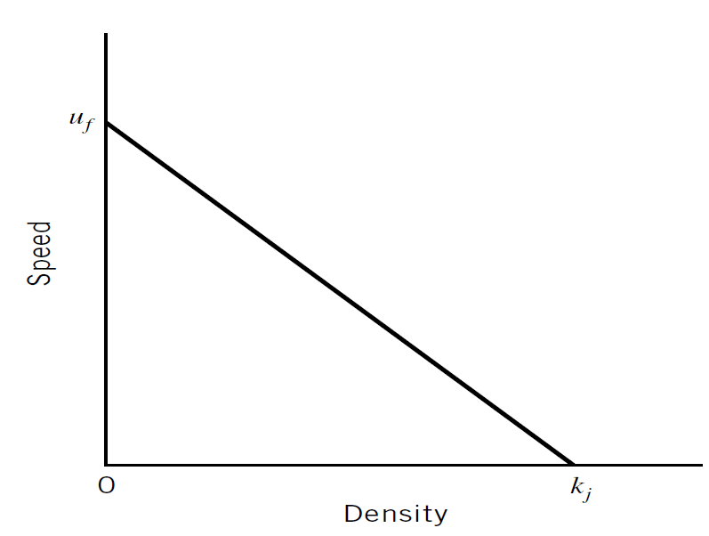
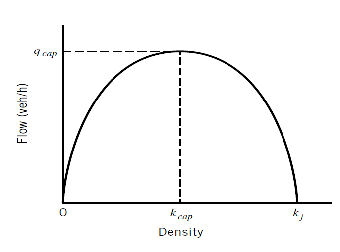
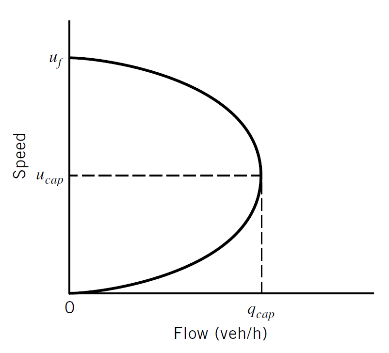
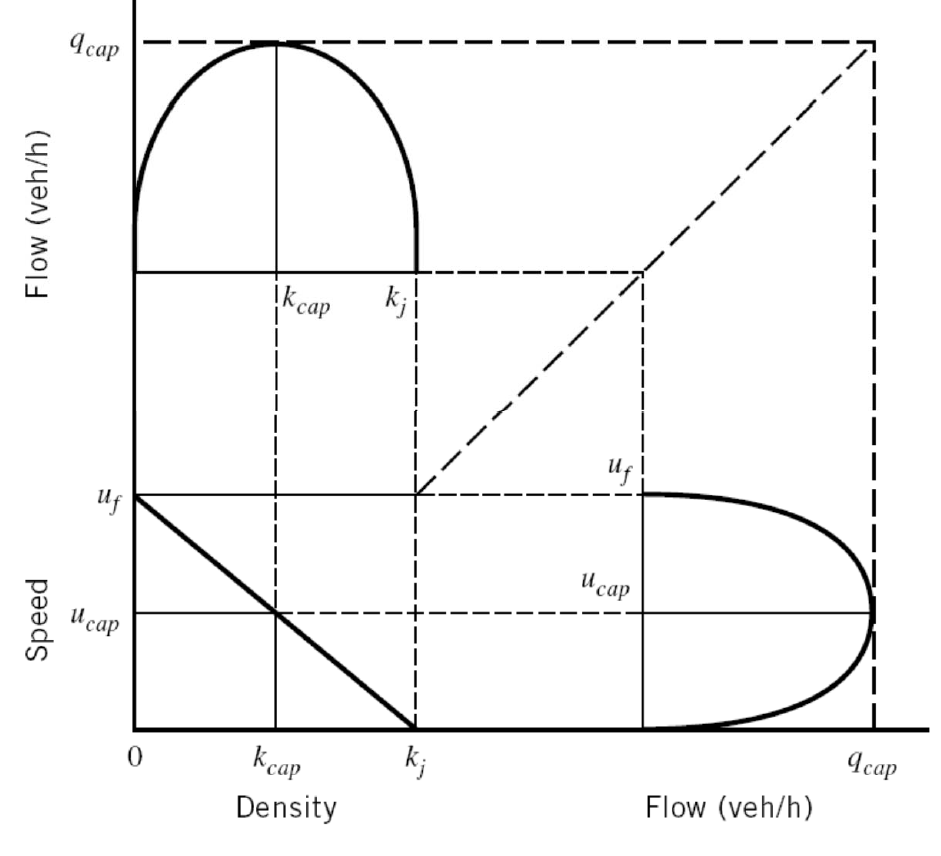
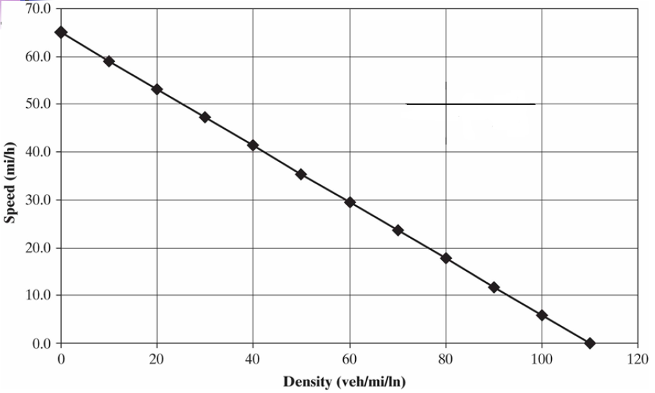

Class 04 & 05 09/02/2026
Chapter 5: Traffic Stream Characteristics
Class Logistics (09/02/2026)
- Update Chapter Number in lecture slides
- 5th Edition: Chapter 27 Geometric Design
- Revised HW 1 posted on BlackBoard
- Course Project
- Team members assigned
- Tech Memo #1 uploaded
Traffic Stream Characteristics
- To analyze, evaluate, and plan improvementprojects, traffic engineers need a set of variables to describe traffic streams in quantitative terms.
- Macroscopic variables:
- Volume
- Flow
- Speed
- Density and Occupancy
- Microscopic variables:
- Headway
- Spacing
Volume and Rate of Flow
- Purpose:
- trends over time
- general planning purposes
- Traffic Volume, \(V\):
- number of vehicles passing a point on a highway, or a given lane or direction of a highway, during a specified time interval.
- Traffic Flow, \(q\):
- number of vehicles passing a point on a highway, or a given lane or direction of a highway, during a specified time interval.
- \(q = \frac{n}{t}\)
- Unit:
- vehicles or vehicles per unit time (veh/hour): Rate of Flow
Volume and Rate of Flow…
- Daily Volumes
- Average Annual Daily (AADT)
- Average Annual Weekday (AAWT)
- Average Daily Traffic (ADT)
- Average Weekly Traffic (AWT)
- Hourly Volumes
- Peak-hour volume
- Directional Design Hour Volume
- Sub-hourly Volumes
- PHF
Daily Volumes/Flow
- Daily Volume or Flow: Vehicles per day
| Defn | Space | Count Period, t | Formula |
|---|---|---|---|
| AADT: | Given location | 365-day or 1 year | \(\frac{n}{t=365}\) |
| AAWT: | Given location | weekdays over a full 365-year | \(\frac{n}{t=260}\) |
| ADT : | Given location | less than one year | \(\frac{n}{t<365}\) |
| AWT : | Given location | weekdays and less than one year (month) | \(\frac{n}{t\ weekdays\ and\ <365}\) |
Daily Volumes: Problem

Daily Volumes: AWT

Daily Volumes: AWT

Daily Volumes: ADT

Daily Volumes: ADT

Daily Volumes: AADT

Daily Volumes: AADT

Hourly Volumes
- Volume varies considerably over the 24 hours of the day, with periods of maximum flow occurring during the morning and evening commuter “rush hours.”
- Peak hour: The single hour of the day that has the highest hourly volume is referred to as the peak hour.
- Peak-hour Traffic Volume: Traffic Volume in the peak hour
- peak-hour traffic volume depends on direction of flow: “Morning Peak” and “Evening Peak”
Hourly Volumes: Peak-hour volumes
- AADTs are converted to a peak-hour volume in the peak direction of flow.
- Directional Design Peak Hour (DDHV)
- \(DDHV= AADT \times K \times D\)
- \(K\) = proportion of daily traffic occurring during the peak hour
- \(D\) = proportion of peak hour trafic traveling in the peak direction of flow.
Peak-hour volumes …

Peak-hour volumes: Problem
Consider the case of a rural highway that has a 20-year’ forecast of AADT of 30,000 veh/day. Based on the data of Table 5.2, what range of directional design hour volumes might be expected for this situation?
Peak-hour volumes: Problem
Consider the case of a rural highway that has a 20-year’ forecast of AADT of 30,000 veh/day. Based on the data of Table 5.2, what range of directional design hour volumes might be expected for this situation?
Solution
\(K = (0.15 -0.25)\)
\(D = (0.65-0.80)\)
\(DDHV_{low} = AADT \times K \times D\)
\(DDHV_{low} = 30,000 \times 0.15 \times 0.65 = 2,2925\) veh/hour
\(DDHV_{low} = 2,2925 veh/hour\)
\(DDHV_{low} = AADT \times K \times D\)
\(DDHV_{low} = 30,000 \times 0.25 \times 0.85\)
\(DDHV_{low} = 6,000\) veh/hour
Sub-Hourly Volumes
- Volumes observed for periods of less than one hour
- Hourly Volume: Volume in one-hour
- Hourly Rates of Flow: Volumes observed for periods of less than one hour and expressed as equivalent hourly volume
- Peak Hour Factor
Sub-Hourly Volumes: Problem

Sub-Hourly Volumes: Hourly Volume

Sub-Hourly Volumes: Hourly Volume

Sub-Hourly Volumes: Hourly Flow Rate

Sub-Hourly Volumes: Hourly Flow Rate

Sub-Hourly Volumes: Max. rate of Flow
- Max. rate of Flow: The max. flow rate within the peak hour
- \(Peak\ Hour\ Factor (PHF) = \frac{Hourly\ Volume}{max.\ rate\ of\ flow}\)
- \(PHF = \frac{V}{4*V_{m15}}\)
Sub-Hourly Volumes: Max. rate of Flow
- \(PHF = \frac{V}{4*V_{m15}}\)
- \(PHF = \frac{4200}{4*1200}\)
- \(PHF = 0.875\)
Speed and Travel Time
Single Vehicle Speed
- distance traversed = speed x time to traverse distance
- \(d=S \times t\)
Group Vehicle Speed
- Time mean speed (TMS) - The average speed of all vehicles passing a point on a highway or lane over some specified time period.
- Space mean speed (SMS) - The average speed of all vehicles occupying a given section of highway or lane over some specified time period.
Traffic Stream Speed
- \(TMS, u = \frac{\sum_{i=1}^{n} u_i}{n}\)
- \(u_i\): speed of veh \(i\)
- \(SMS, u_s = \frac{total\ dist.\ travelled\ by\ all\ veh}{travel\ time\ of\ all\ veh}\)
- \(SMS, u_s = \frac{nl}{\sum_{i=1}^{n} t_i}\)
- \(l\): length of the roadway section
- \(t_i\): travel time of veh i \(i\)
TMS vs. SMS
- SMS weights slower vehicles more heavily.
- TMS weights each vehicle equally.
- SMS \(≤\) TMS
- SMS = TMS when all vehicles are traveling at the same speed.
Speed and Travel Time: Problem

Speed and Travel Time: Solution

Density and Occupancy
- Density
- the number of vehicles occupying a given length of highway or lane (veh/mile) at a given time
- \(D\ or\ k = \frac{n}{l}\)
- Occupancy
- Proportion of time that a detector is “occupied”
- \(O = \frac{D(L_v + L_d)}{5,280}\)
- \(L_v\): avg. length of vehicle
- \(L_d\): length of detector
Headway and Spacing
Illustration: Headway and Spacing
- Headway: time interval between successive vehicles as they pass a point along the lane (measured between common reference points on the vehicles).
- \(q = \frac{3600}{\bar{h}}\)
- \(q\) = flow rate, veh/hr/ln and \(\bar{h}\) = avg. headway in the lane, s
- \(q = \frac{3600}{\bar{h}}\)
- Spacing: distance between successive vehicles as they pass a point along the lane (measured between common reference points on the vehicles).
- \(k = \frac{5280}{\bar{s}}\)
- \(k\) = density, veh/mile and \(\bar{s}\) = avg. spacing in the lane, ft
- \(k = \frac{5280}{\bar{s}}\)
Headway and Spacing: Notes
What if headway becomes smaller?
- Vehicles are arriving closer together in time, so flow increases—up to the point where congestion or instability develops.
What if spacing becomes smaller?
- More vehicles occupy the same roadway length, so density increases. Drivers have less room to maneuver and less recovery space.
Headway and Spacing: Summary
| Param | Measured at | What it represents | Typical unit | Connects to |
|---|---|---|---|---|
| \(h\) | One location, over time | Time between consecutive vehicles | s/veh | Flow |
| \(s\) | One instant, over distance | Distance between consecutive vehicles | ft/veh or m/veh | Density |
Fundamental Identity
- Depicts relationship among Flow Rate, Speed, and Density
- \(q= k \times u_s\)
- \(q\) = Flow, veh/h or veh/h/ln
- \(k\) = density, veh/mi or veh/mi/ln
- \(u_s\) = SMS, mph
Relationship: Problem
Consider a freeway lane with a measured space mean speed of 60 mi/h and a flow rate of 1,000 veh/h/ln. What is the Density of the roadway segment?
- \(q= k \times u_s\)
- \(k= \frac{q}{u_s}\)
- \(k= \frac{1000}{60} = 16.7 veh/mi/ln\)
Traffic Stream Models
Speed and Density: Greenshield’s Linear model
- \(u_s = u_f(1 - \frac{k}{k_j})\)
- \(u\): SMS, mph
- \(u_f\): Free-flow speed, mph
- \(k\): density, veh/mi
- \(k_j\): Jam density, veh/mi
- Observations
- At \(k \approx 0\), \(u=u_f\), no/few vehicles on the road, more speed
- At \(k=k_j\), \(u=0\), more vehicles on the road, less speed

Traffic Stream Models
Flow and Density
Using the assumption of a linear speed-density relationship, a parabolicflow-density model can be obtained by using the given u-k relation and fundamental identity.
- \(q = k \times u_s\)
- \(q = k \times u_f(1 - \frac{k}{k_j})\)
- \(q = u_f(k - \frac{k^2}{k_j})\)

- Observations
- At \(k \approx 0\), \(q=0\), no vehicle, no flow
- At \(q=q_{max}\) at capacity, \(k=k_c\), maximum flow
- After \(k>k_c\), flow drops
- At \(k>k_j\), no flow
Traffic Stream Models
Speed and Flow
Rearranging speed-density and using fundamental equation to find speed-flow relation
- \(q = k_j(u - \frac{u^2}{u_f})\)

- Observations:
- same flow can occur under two very different traffic conditions (stable free flow and congested)
Traffic Stream Models
Functional Diagram of Traffic Flow

Traffic Stream Models
Traffic Stream Models: Problem
Given the following u-k relation, determine the q-k relation and flow capacity. What is the speed at maximum flow (\(u_{cap}\))?

Traffic Stream Models: Solution
Given the following u-k relation, determine the q-k relation and flow capacity. What is the speed at maximum flow (\(u_{cap}\))?
- Find \(u-k\) relation
Traffic Stream Models: Solution
Given the following u-k relation, determine the q-k relation and flow capacity. What is the speed at maximum flow (\(u_{cap}\))?
- Find \(q-k\) relation
Traffic Stream Models: Solution
Given the following u-k relation, determine the q-k relation and flow capacity. What is the speed at maximum flow (\(u_{cap}\))?
- Find \(q-u\) relation
Traffic Stream Models: Solution
Given the following u-k relation, determine the q-k relation and flow capacity. What is the speed at maximum flow (\(u_{cap}\))?
- Find \(k_{cap}\)
Traffic Stream Models: Solution
Given the following u-k relation, determine the q-k relation and flow capacity. What is the speed at maximum flow (\(u_{cap}\))?
- Find \(u_{cap}\)
Traffic Stream Models: Solution
Given the following u-k relation, determine the q-k relation and flow capacity. What is the speed at maximum flow (\(u_{cap}\))?
- Find \(q_{cap}\)
Traffic Stream Models: Solution
Given the following u-k relation, determine the q-k relation and flow capacity. What is the speed at maximum flow (\(u_{cap}\))?
ALL STEPS
\(u_s = u_f(1 - \frac{k}{k_j})\)
\(u_s = 65(1 - \frac{k}{110})\)
- \(u_s = 65(1 - \frac{k}{110})\)
- \(\frac{q}{k} = 65(1 - \frac{k}{110})\)
- \(q = 65k- 0.59091k^2\)
- \(u_s = 65(1 - \frac{k}{110})\)
- \(u_s = 65(1 - \frac{\frac{q}{u_s}}{110})\)
- \(q = 110u_s-1.6923u_s^2\)
- \(q = 65k- 0.59091k^2\)
- \(\frac{dq}{dk} = 65 -1.18182k\)
- \(65 -1.18182k_{cap} = 0\)
- \(k_{cap} = 55\) veh/h
- \(q = 110u_s-1.6923u_s^2\)
- \(\frac{dq}{du_s} = 110-3.3846u_s\)
- \(110-3.3846u_s = 0\)
- \(u_{cap} = 32.5\) mph
- \(q_{cap} = k_{cap} \times u_{cap}\)
- \(q_{cap} = 55 \times 32.5\)
- \(q_{cap} = 1,788\) veh/h